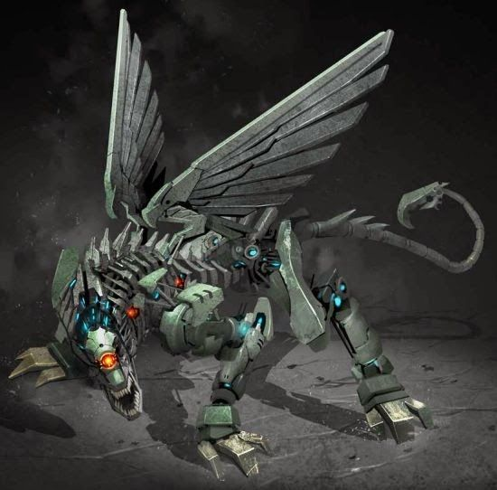
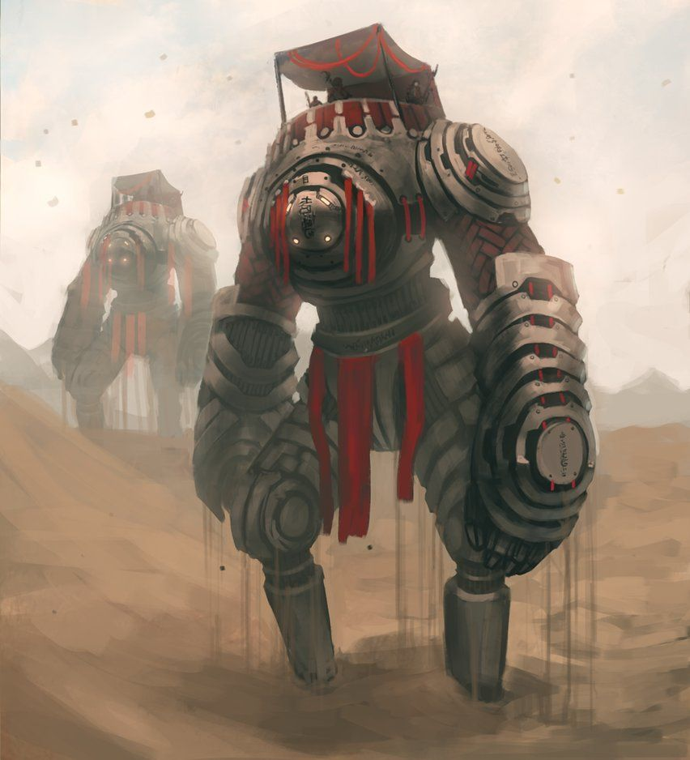

Nessus RPG apresenta um universo “pós-apocalíptico”, onde os humanos não existem mais e as
máquinas dominam o mundo. Todavia, este mundo é algo novo mesmo para as máquinas: nuvens
negras cobriram o céu — que surgiram em consequência de séculos de guerras entre os humanos
—, impedindo que a iluminação solar alcançasse a superfície do planeta. Como as máquinas
eram energizadas por energia solar, estas ficaram em estado inerte durante muito tempo.
Séculos após a extinção humana, o sol voltou a iluminar o planeta, e as máquinas, enfim,
despertaram — as primeiras máquinas a serem naturalmente energizadas foram intituladas como
Primeiros Despertos, e elas foram responsáveis por erguer as máquinas que se encontravam em
ambientes sem acesso a luz solar. Sem humanos ou outros seres inteligentes destruindo o
ecossistema, animais e plantas evoluíram descontroladamente — e a radiação oriunda de
inúmeros conflitos humanos fez com que muitas destes seres passassem pelo processo de
mutação.
Estas máquinas, contudo, estavam acostumadas a viver em um mundo de recursos abundantes e
com o constante auxílio dos seres humanos. Agora, em um clima árido e com recursos escassos,
estas máquinas terão que triunfar neste faroeste de metal. O código de conduta dos robôs foi
apagado de seus softwares — logo, estes robôs se tornaram livres de quaisquer amarras
morais!

O financiamento coletivo
A Craftando Jogos precisava arrecadar R$ 18.000 para produzir Nessus RPG. No momento da
publicação, o estúdio arrecadou já havia arrecadado R$ 20.700 — portanto, o financiamento
coletivo foi bem sucedido e o projeto já é uma realidade!
Todavia, ainda há muitas metas adicionais a serem atingidas: a editora pretende
disponibilizar aventuras adicionais, novas músicas que servirão de trilha sonora para suas
aventuras, melhorias de qualidade em produtos físicos e até mesmo um novo livro na versão
física.
Falando em produtos físicos, o financiamento coletivo de Nessus RPG não engloba apenas o
Livro Básico: o financiamento coletivo prevê a produção de um livro de aventuras, um Escudo
do Mestre com três abas, um conjunto de marca-páginas e um bloco de fichas!
